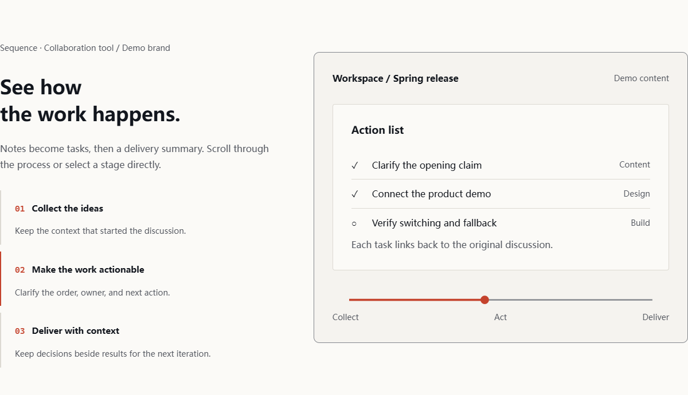

Design with intent.
Verify the motion.
Deliberate typography and original components.
Built for real content—including Chinese.
ORIGINAL SPECIMEN / PRODUCT STATE

Deliberate typography and original components.
Built for real content—including Chinese.
ORIGINAL SPECIMEN / PRODUCT STATE
